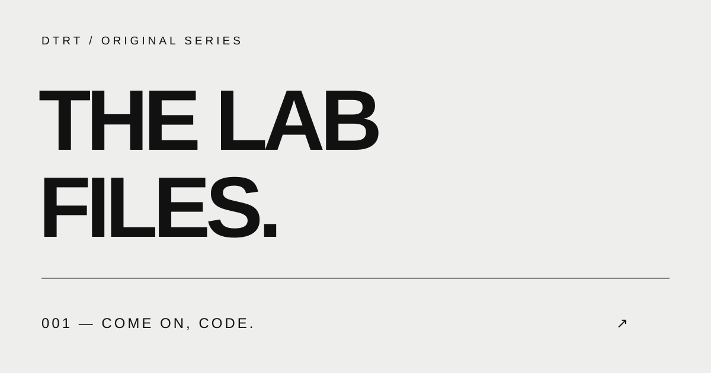

DTRTC / THE LAB FILES
Good games.
Great company.
CS2, unexpected moments, and the people who make every round worth watching. Welcome to the Lab.

Come On, Code.
Watch Lab File #001
THE LIVE ROOM
Pull up a chair.
FROM THE STREAM
Small moments. Big reactions.
STAY IN THE LOOP
Be here for the next one.
Follow on Twitch for stream notifications. Find new clips on YouTube and Instagram.
BEHIND THE CHANNELAudience & insightsDated metrics, platform coverage, and the ongoing content review.+
Then vs. now
Loading dated public measurements…
OWNER ANALYTICS · OCT 9, 2026 · SOCIAL AUDIT UPDATED 9:53 PM ET
What the dashboards show
A dated review of the open creator dashboards, public post grids and Google Analytics. Reporting windows and counter types differ, so these numbers are shown by source and are not added together. The older public tracker on this page saved its YouTube + TikTok view series at 5:35 PM ET; it excluded Instagram.
Views, reactions and conversation
| Platform and window | Views / audience | Likes, comments and other signals |
|---|---|---|
| YouTube · Sep 11–Oct 8; public grid rechecked Oct 9 | Studio: 5,173 channel views, 7.0 watch hours and +1 subscriber in its 28-day report. The live card later showed 12,077 views in the last 48 hours. The public channel showed 36 videos, including 32 Shorts. These are different scopes. | Shorts report: 16 net likes; 26.9% stayed to watch and 73.1% swiped away. 94.2% of Short views came from the Shorts feed. Two recent comments were visible in the inbox, not an account-wide total. The public tracker previously summed only 27 videos and is incomplete for the later grid. |
| Instagram · Reel grid checked Oct 9, 9:49 PM ET; Insights set to last 30 days | 12,277 displayed plays across 34 Reels when their profile-grid counters are summed. Separately, the Insights overview says 2,407 views, 1,992 viewers, 149 profile visits and 58 current followers. | Insights says 9 interactions and 10 accounts engaged. Those are not play counts. It also says 96.3% of views came from non-followers and 98.8% were Reels. The overview did not show a separate account-wide like or comment total. |
| TikTok · public grid checked Oct 9; Studio last 28 days | 1,749 displayed plays across 16 public videos. Separately, Studio shows 761 video views and 5 profile views in its selected 28 days; the profile shows 65 followers. | Studio shows 6 likes, 0 comments and 0 shares for the period; the profile shows 25 lifetime likes. For You supplied 99.3% of reported traffic. One recent heart-emoji comment was visible on Studio Home despite the period's 0-comment metric. The source data lists all 16 video counters. |
| Twitch · Sep 10–Oct 9, rechecked 9:52 PM | 403 unique viewers, up from 402 at the first reading; 1.4 average concurrent viewers; 170h 17m streamed; 38 public followers. | 33 follows and 64 unique chatters. The latest completed stream card showed 102 unique viewers and 3 follows. These are stream metrics, not post plays or likes. |
| Kick · public channel checked Oct 9 | 27 followers; channel offline at check time. A comparable view or unique-viewer total was not visible. | Likes and comments were not available from the open channel view. Kick is excluded from view sums. |
| X · profile checked Oct 9, 9:52 PM | 12 followers; 80 posts on the profile. | The four newest visible posts showed 3, 4, 1 and 1 views, with 0 likes, replies and reposts on each. This is a four-post sample; account-wide impressions and engagement were not available in the open profile. |
Posts driving the visible reach
Instagram count check: The 34 displayed Reel play counters sum to 12,277. The six largest are 1,453, 1,357, 1,290, 1,246, 1,098 and 829 plays. The source data lists all 34 counters. These are plays, not likes or comments.
Instagram's last-30-days Insights overview still shows 2,407 views and 9 interactions. Its own top-content cards show individual Reel counts above 1,000. The two Instagram surfaces do not explain why their totals differ, so neither figure is substituted for the other.
YouTube Studio's live card showed 12,077 views in the last 48 hours at recheck. Its leading Shorts were Lurk King (1,464), Skitz Hit the Ladder (1,229), and Come On, Code (1,224). This rolling live card includes Oct 9 activity and should not be compared as a growth rate with the 28-day report ending Oct 8.
Tracker blind spot: The older 13,041-view card above is a saved sum of 11,296 tracked YouTube post views and 1,745 TikTok post views at 5:35 PM ET. It omitted Instagram, X, Twitch and Kick; it also predated newer YouTube and TikTok posts. It is a partial tracked-post snapshot, not “all sites” or unique viewers. The 12,277 Instagram Reel plays and 1,749 TikTok public plays above were checked later and are intentionally not added to that older series.
Sources: YouTube public Shorts and YouTube Studio; Instagram Reels and Insights; TikTok profile and Studio; Twitch channel and Analytics; Kick; X. Owner dashboard links require the relevant account login.
Website visitor pages
Google Analytics recorded 50 page views from 5 active users, 119 events and 0 key events for Sep 11–Oct 8. Page titles changed during the period, so the rows below combine titles by path. A view is a page load or screen view, not a unique visitor.
| Page path | Page views | Share of site views |
|---|---|---|
| Home (/ and /index.html) | 24 | 48% |
| /story.html | 8 | 16% |
| /live/ | 6 | 12% |
| /radio.html | 5 | 10% |
| /stories/afterlight/volume-one/ | 3 | 6% |
| /media.html | 2 | 4% |
| /isabella.html | 1 | 2% |
| /worlds.html | 1 | 2% |
Source: DTRT Lab Google Analytics · Pages and screens. Analytics access requires the property login. Plausible tracking is installed on the site, but its dashboard did not open under the current browser login.
What to act on next
- Short clips are finding new people: Instagram's view mix is 96.3% non-followers, while YouTube and TikTok discovery is concentrated in their short-video feeds.
- Improve the opening seconds before increasing clip volume: YouTube Shorts showed 73.1% swiping away in its selected window.
- Measure whether social viewers reach this site with tagged links. The current website sample is only 5 active users, so it cannot support a conversion claim.
- Review the AI-generated-clip concern and explain the recorded footage and any editing tools clearly where that clip is shared.
This is a saved point-in-time review, not a live connection to owner analytics. The source data file records each window and measurement.
Gained this stream
Loading verified readings…
Progress report card
Loading dated report…
Latest clips
Newest firstWhat is this? The newest short videos from the stream.
Your clip pick
Watch both moments, then tell us in the Twitch chat beside the stream which one deserves a breakdown next. Type “Clip pick: Literally Unlosable” or “Clip pick: Good Old-Fashioned Cutscene.” Chat is the existing place to share your choice; this page does not count votes.
Watch Literally Unlosable · Watch Good Old-Fashioned Cutscene
Want something different? Suggest a moment or question in chat.
Music credits
MUSIC ON STREAMShow all tracks
The saved tracker uses partial post-counter snapshots; the dated owner review above shows later readings and their gaps. Post plays are not unique viewers, and platform followers can overlap. YouTube rounds its public subscriber display. Raw files: tracker snapshot and owner audit.